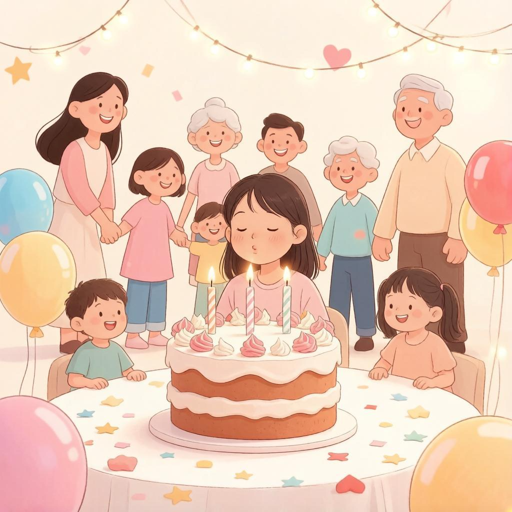

01Вводные и концепция
- Формат
- Домашний праздник в квартире бабушки
- Участники
- 9 человек: именинница + 8 гостей
- Состав
- Катя, Коля и Ксюша, дядя с тётей, бабушка с дедушкой, мама и папа
- Тема
- «Бабушкин сундучок» — квест по семейным тайнам
- Тайминг
- 3,5 часа, 18:00–21:30
- Реквизит
- Только то, что есть дома — без покупных костюмов
«Бабушкин сундучок» — не просто квест, а путешествие по семейной памяти. Сундучок (коробка с замком) открывается только после прохождения пяти станций. Задания — от каждого члена семьи. Именинница — соавтор: помогает готовить станции накануне.
- Младшие (5–7 лет) участвуют с помощью взрослых — ни одно задание не длится дольше 7 минут.
- Старшее поколение не вытягивают насильно — они «хранители» станций, им приятно наблюдать и вспоминать.
- Весь реквизит — из дома: старые ключи, ложки, зеркальца, баночки от круп, бабушкины платки.
02Реквизит
Собрать за два дня — всё находится в доме.
- Сундучок или чемоданчик с кодовым замком (ключ — у дедушки)
- 5 картонных «ключей»-заготовок, на каждом — цифра
- Платок для глаз и 5 мелких предметов: пуговица, монетка 1981 г., значок, ключ от старого шкафчика, сушёная лаврушка
- Карточки с заданиями, крупный шрифт
- Ингредиенты для печенья: мука в миске, сахар, формочка
- Старый бабушкин микрофон — расчёска на шнуре
- Свечи в банках, гирлянда на батарейках
- Конверт с «сертификатами» для финала
- Телефон на штативе — семейное фото в финале
03Тайминг мероприятия
| Время | Блок | Длительность |
|---|---|---|
| Встреча гостей и разминка | 20 мин | |
| Застолье с интерактивами | 40 мин | |
| Квест «Бабушкин сундучок» | 50 мин | |
| Финальный сюрприз | 25 мин | |
| Вручение подарка и торт | 20 мин | |
| Чаепитие, песня для Кати и проводы гостей | 50 мин |
Блок «Чаепитие, песня и проводы» добавлен при проверке: без него заявленные 3,5 часа заканчивались в 20:40.
04Сценарий
1. Встреча и разминка 18:00–18:20
Гостиная освещена только гирляндами. Бабушка встречает каждого у двери.
На стульях — бумажные фигурки: чашка, клубок, очки, машинка. Кто взял — выполняет микро-задание. Например, у кого чашка — тот три раза ласково называет соседа справа.
Разминка «Семейная цепочка». Стоя передаём клубок, называя одно слово из детства: бабушка — «варенье», младший брат — «прятки», папа — «велосипед». Обрыв — все хохочут, клубок возвращается к бабушке.
2. Застолье с интерактивами 18:20–19:00
Стол простой, но тёплый. Между блюдами — карточки с вопросами.
Интерактив 1. «Бабушкин микрофон» · 5 мин
Передаётся расчёска на шнуре. Тот, у кого микрофон, говорит пожелание имениннице, но обязан использовать слово из списка: огород, варежки, чердак, трамвай, пластинка.
Дети обожают, когда дедушка говорит: «Желаю тебе, внучка, чтобы твой характер не гремел, как трамвай по рельсам, а мягко катился».
Интерактив 2. «Что у меня в тарелке?» · 7 мин
Трое взрослых (бабушка, тётя, мама) завязывают глаза. Им под тарелки кладут лавровый лист, кусочек сушёного мандарина, крупинку гречки. Угадать — смех. Дети подсказывают шёпотом.
Интерактив 3. «Продолжи пословицу» · 5 мин
Бабушка начинает — дети и внуки заканчивают. «Без труда не вытащишь…» — «…и рыбку из пруда» (хором). «У семи нянек…» — «…дитя без глазу» (дядя специально путает — дети поправляют).
05Квест «Бабушкин сундучок»
Гости делятся на пары: ребёнок + взрослый. Каждая пара получает маршрутный лист — фото станции и подсказку.
-
Бабушка
«Голос из кухни»
Бабушка за дверью кухни произносит три фразы из своего детства: «Не таскай сушки из буфета — усы отрастут», «Я в 12 лет корову доить ходила», «Этот платок мне на свадьбу дали». Дети угадывают год — 1963.
-
Дедушка
«Секретный ящичек»
В мешке четыре предмета. На ощупь угадать тот, что дедушка положил из своего кармана: старый компас. «Это я с флота привёз».
-
Мама и тётя
«Семейный рецепт»
На столе четыре мисочки. Собрать ровно 300 г муки без весов, мерной ложкой. Пока возятся — мама рассказывает, как они с бабушкой пекли этот пирог в 1998.
-
Дядя
«Зеркальная телеграмма»
На стене лист с текстом задом наперёд. Через зеркальце читают: «19 августа мы ходили в лес за грибами». Дядя: «Это я в 8 лет потерялся, меня бабушка нашла».
-
Катя и младшие
«Карта сокровищ»
На листе план бабушкиной квартиры. Крестиками отмечены подоконник, горшок с фикусом, холодильник. Дети находят конверт с фрагментом старого общего фото.
Ключ 5 — цифра, открывающая сундучок. Например, сумма всех ключей: 1 + 2 + 3 + 4 + 5 = 15.
06Финальный сюрприз
Все возвращаются в гостиную. Сундучок на столе. Дедушка торжественно открывает. Внутри — не вещи, а конверт «Сертификаты семьи» для каждого:
- Бабушка: «Право на 1 час тишины без просьб».
- Младший брат: «Совместная постройка шалаша в субботу».
- Именинница: «Вечер без мытья посуды + 2 серии „Маленьких мисс“».
Письмо от бабушки, заранее записанное на диктофон, включают в этот момент:
Старенький фотоальбом открывают на странице, где бабушка в 12 лет. В 20:10 — ритуал «Свеча желаний»: каждому дают ленточку, на ней пишут одно пожелание бабушке (не имениннице). Ленты вешают на окно. Бабушка читает первые три — плачет.
Подарок и торт 20:20–20:40
Подарок — не гаджет, а «набор 12-летней»:
- полароидный снимок семьи, сделанный сегодня;
- билет в кино с мамой;
- коробка «12 записок» — на каждый месяц предсказание от папы;
- копилка с надписью «На чердак».
Чаепитие, песня и проводы 20:40–21:30
Чай с бабушкиным пирогом и свободное общение. Включаем «Песню для Кати», созданную в Suno: припев подхватывает вся семья. В конце — общее живое фото за столом и проводы гостей.
07Песня для Кати
Стиль: Upbeat Pop Rap / Family Choir. BPM: 120–125. Пойте по кругу — последние строки каждого куплета семья подхватывает.
Ты умница — не по словам, а по глазам, В косичках — мудрость, в кедах — ураган. Уже совсем — но детство не крадёт, Оно в тебе, как бабушкин блокнот. Вопросы глубже, чем «когда обед», Ты — наш рассвет, ты — собственный сюжет. Не торопись взрослеть на целый свет, Мы любим Катю — в десять и в двенадцать лет.
Катя-Катя — девять нот семьи, Ты — та самая, кого берегли. Папин смех, мамин завиток, Дед с бабулей — счастья уголёк. Коля с Ксюшей — младший десант, Дружный хор — не нужен им талант. Девять за столом — один мотив, Катя, этот день — для позитив!
Эй! (хлоп) Ля-ля-ля! (хлоп)
Мама — твой стилист, твой первый режиссёр, Папа — критик, но в душе — актёр. «Мы гордимся» — не за буквы в дневнике, А за улыбку в каждом позвонке. За то, что младшим — зонтик в ливень и фонарь, За то, что бабушкин хранишь январь. Они вложили не в слова — в тепло, Чтобы тебе, родная, — повезло.
Бабуля — вяжет, но танцует твист, Дедуля — мастер, но в душе — артист. К ним — как в сказку, где пирог с орехом, Где каждый угол — детским пахнет смехом. А Коля — шкода, но тебя хранит, Ксюша — кнопка, но с тобой — бандит. Двоюродный десант — не разлей вода, Ты для них — сестра, раз и навсегда. Девять за столом — не просто цифра, Это — якорь, это — материк…
Если мир большой качнётся зыбко, Здесь — ладони, сжатые в тайник. Бабушка: «Катюша…» — и кивок, Папа — бровь, и Ксюша — кулачок, Коля — «С днём!..» — на весь балкон, Семья — единственный билет. И он — не тронь.
(семья: «Катя, ура — девять нот!») (бабушка: «И пирог!») (дети: «Мы — таланты!») Хлоп-хлоп — раз, два, три… С днём рождения, цвети!
Катя… двенадцать… весна… Спасибо, что ты есть у нас. Девять за столом — Тише… тише… С днём рождения.
Исходный текст начинался с «восемь за столом» — ошибка пришла из промпта Gemini. После уточняющего запроса GigaChat переписал песню на «девять нот семьи». Оба трека собраны в Suno: «Катя ДР» и «Песня для Кати 2.0».
08Советы для бабушки
Держать отдельно от сценария — это шпаргалка на вечер.
- Если младшие устали — станция сокращается до 3 минут, взрослые подыгрывают.
- Не страшно, если шифр не прочитают — дядя «случайно» подскажет.
- Торт выносите после свечей, не раньше — иначе рухнет интрига.
- Музыка фоном: Клавдия Шульженко, Никитины, «Песенка о медведях» (минус) — лёгкая ностальгия без давления.
09Визуальное оформление
Иллюстрация сгенерирована через Kandinsky (GigaChat): девочка 12 лет задувает свечи на торте, вокруг восемь членов семьи разного возраста, пастельные тёплые тона, мягкий свет гирлянд.

Kandinsky не держит точное число людей: на второй картинке младших детей больше двух. Для открытки это допустимо — ограничение зафиксировано в отчёте, а не выдано за решённое.